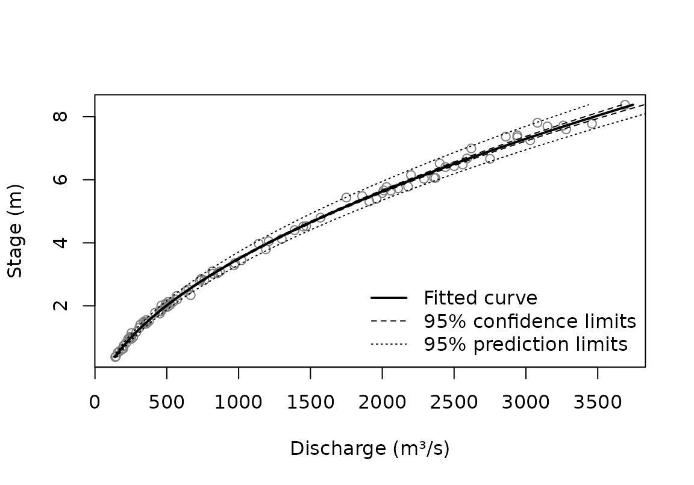

A rating curve turns a recorded stage into a discharge, and that
discharge is uncertain. This vignette shows how CSHShydRometry puts
limits on it, what the limits mean, and where they can mislead. The fits
themselves are covered in vignette("fitting"), which also
explains why the Thompson gaugings used here illustrate the methods
rather than give a rating for any one period.
Two kinds of limits
predict() gives two kinds of limits, each at a level you
choose:
-
Confidence limits (
conflev) bound how “wobbly” the curve is: how much it could differ had it been fit to a different set of gaugings. They reflect how well the gaugings pin the curve down, and they narrow as more gaugings are collected. -
Prediction limits (
predlev) bound what flow could reasonably materialize for a given stage. They add the scatter of individual gaugings about the curve, and do not narrow below that scatter however many gaugings there are. They are always wider than confidence limits.
fit <- rc_powerlaw(
discharge, stage,
data = thompson,
variance = "prop"
)
predict(fit, new_stage = c(1, 4, 8), conflev = 0.95, predlev = 0.95)
#> # A tibble: 3 × 6
#> stage fit ci_lwr ci_upr pi_lwr pi_upr
#> <dbl> <dbl> <dbl> <dbl> <dbl> <dbl>
#> 1 1 252. 249. 255. 232. 272.
#> 2 4 1208. 1195. 1222. 1111. 1306.
#> 3 8 3476. 3410. 3542. 3191. 3761.Which to use depends on the question. Discharge averaged over a period, where the scatter of individual gaugings largely cancels, calls for confidence limits. Discharge at a particular moment calls for prediction limits.
band <- predict(fit, conflev = 0.95, predlev = 0.95)
plot(stage ~ discharge, data = thompson, col = "grey50",
xlab = "Discharge (m³/s)", ylab = "Stage (m)")
lines(stage ~ fit, data = band, lwd = 2)
lines(stage ~ ci_lwr, data = band, lty = 2)
lines(stage ~ ci_upr, data = band, lty = 2)
lines(stage ~ pi_lwr, data = band, lty = 3)
lines(stage ~ pi_upr, data = band, lty = 3)
legend("bottomright", c("Fitted curve", "95% confidence limits",
"95% prediction limits"), lty = 1:3, lwd = c(2, 1, 1), bty = "n")
The variance scheme shapes the limits
The variance scheme is a statement about the scatter, so it decides
how the prediction limits change with the flow. With
var_none() the scatter is the same at every flow; with
var_prop() it grows in proportion to the flow.
Let’s make a function to calculate prediction interval widths.
pi_widths <- function(fit, at) {
p <- predict(fit, new_stage = at, predlev = 0.95)
p$pi_upr - p$pi_lwr
}Now apply that function to see how the widths differ:
at <- c(1, 8)
fit_none <- rc_powerlaw(discharge, stage, data = thompson)
tibble::tibble(
stage = at,
none = pi_widths(fit_none, at = at),
prop = pi_widths(fit, at = at)
)
#> # A tibble: 2 × 3
#> stage none prop
#> <dbl> <dbl> <dbl>
#> 1 1 250. 40.7
#> 2 8 261. 570.Under var_none() the prediction band is nearly as wide
at low flow as at high flow, which is implausible here: the gaugings in
vignette("fitting") scatter in proportion to the flow.
Under var_prop() the band is narrow at low flow and wide at
high flow, as the gaugings are.
Under var_spec(), each gauging’s variance is supplied,
up to a common factor, rather than modelled, so the fit says nothing
about the scatter of a new gauging. Its prediction limits come back as
NA, while its confidence limits are computed as usual.
What the limits assume
The limits use the t distribution, which assumes the
gaugings scatter normally about the curve. Confidence limits depend on
this only mildly, because the estimates average over many gaugings.
Prediction limits depend on it directly: they are only as good as the
assumed shape of the scatter, and if it is skewed or has heavy tails
they can miss, especially at high levels such as 0.99. So look at the
residuals before relying on prediction limits. The scaled residuals,
each divided by its estimated standard deviation, are the ones to check.
Here, for the power law under var_prop(), they look roughly
normal according to a Q-Q plot:
scaled <- residuals(fit, type = "scaled")
qqnorm(scaled, main = "Residuals, in standard deviations")
qqline(scaled)Even with normal scatter, the curve is nonlinear in its parameters,
so its estimate is not exactly normal. That affects confidence limits
most, and prediction limits less. With plenty of gaugings the estimate
is close to normal, and the delta method, which the limits use, works
well. In practice, a 95% interval from most fits covers the truth
roughly, not exactly, 95% of the time; see
?predict.rc_powerlaw.
Fits on the log scale
rc_powerlaw_log() works on the log scale, where the
limits are symmetric. Transformed back to discharge they are lopsided,
stretching further above the curve than below it:
fit_log <- rc_powerlaw_log(discharge, stage, data = thompson)
p <- predict(fit_log, new_stage = 8, predlev = 0.95)
c(below = p$fit - p$pi_lwr, above = p$pi_upr - p$fit)
#> below above
#> 274.3804 297.9139The curve itself estimates the geometric mean discharge, which is below the arithmetic mean by a factor that grows with the scatter. With scatter of about 4% here, the difference is small:
fit_log$a_corrected / fit_log$curve_parameters$a
#> nbc dbc
#> 1.000813 1.000784The offset
When the offset, , is estimated, its uncertainty is part of the limits. Holding it fixed removes that part. That is right when is known independently, say from a survey of the control. Fixing it at the value estimated from the same gaugings, though, gives the same curve with limits that are too narrow:
fixed <- rc_powerlaw_log(
discharge, stage,
data = thompson,
offset = fit_log$curve_parameters$c
)
ci_widths <- function(fit, at) {
p <- predict(fit, new_stage = at, conflev = 0.95)
p$ci_upr - p$ci_lwr
}
c(c_estimated = ci_widths(fit_log, 3), c_fixed = ci_widths(fixed, 3))
#> c_estimated c_fixed
#> 20.02188 13.46079Beyond the gaugings
Limits are only as good as the model, and the model is only checked where there are gaugings. Beyond them, the choice of curve matters more than any limit suggests. Here three curves that agree within the gaugings are taken half again past the highest one:
top <- max(thompson$stage)
beyond <- seq(top, 1.5 * top, length.out = 50)
fits <- list(
"Power law" = fit,
"Cubic polynomial" = rc_poly(
discharge,
stage,
data = thompson,
degree = 3
),
"Loess" = rc_loess(discharge, stage, data = thompson)
)
curves <- lapply(fits, predict, new_stage = beyond)
plot(
NULL,
xlim = range(sapply(curves, function(p) range(p$fit))),
ylim = range(beyond),
xlab = "Discharge (m³/s)",
ylab = "Stage (m)"
)
for (i in seq_along(curves)) {
lines(stage ~ fit, data = curves[[i]], lty = i, lwd = 2)
}
legend(
"bottomright",
names(fits),
lty = seq_along(fits),
lwd = 2,
bty = "n"
)The power law follows the physics of flow through a control, so it is the safer guide for modest extrapolation. A polynomial or loess curve has no such basis outside the data. None of their limits accounts for the chance that the control itself changes at higher stages.
Two-segment curves: limits near the breakpoint
For a two-segment curve, predict() offers two methods.
The default, method = "delta", approximates the curve by a
straight line in its parameters. That works well away from the
breakpoint, but the curve has a corner there, and the approximation
jumps across it. method = "boot" refits the curve to
resampled gaugings instead, which makes no such approximation.
sauze <- tibble::tibble(
stage = RBaM::SauzeGaugings$H,
discharge = RBaM::SauzeGaugings$Q,
uncertainty_sd = RBaM::SauzeGaugings$uQ
)
fit2 <- rc_2seg_powerlaw(
discharge,
stage,
data = sauze,
variance = var_spec(sauze$uncertainty_sd^2)
)
k <- fit2$curve_parameters$k
near_k <- seq(k - 0.5, k + 0.5, length.out = 51)
bands <- list(
"Delta method" = predict(fit2, new_stage = near_k, conflev = 0.95),
"Bootstrap" = predict(
fit2,
new_stage = near_k,
conflev = 0.95,
method = "boot",
B = 200,
seed = 1
)
)The two 95% confidence bands either side of the breakpoint, marked by the dotted line:
discharge_range <- range(sapply(bands, function(b) {
range(b$ci_lwr, b$ci_upr)
}))
op <- par(mfrow = c(1, 2))
for (method in names(bands)) {
band <- bands[[method]]
plot(
stage ~ fit,
data = band,
type = "l",
xlim = discharge_range,
main = method,
xlab = "Discharge (m³/s)",
ylab = "Stage (m)"
)
lines(stage ~ ci_lwr, data = band, lty = 2)
lines(stage ~ ci_upr, data = band, lty = 2)
abline(h = k, col = "grey", lty = 3)
}
par(op)The delta band jumps at the breakpoint: just above it, the band is several times wider than just below. The jump comes from the approximation, not the data, and the bootstrap band has none. In a simulation study, a nominal 95% delta interval covered the true curve only about two-thirds of the time just above the breakpoint, against roughly 97% for the bootstrap.
The bootstrap costs a full refit per resample, and the refits repeat
the search over starting breakpoints. So use "delta" for a
quick look, and "boot" where the limits near the breakpoint
matter.